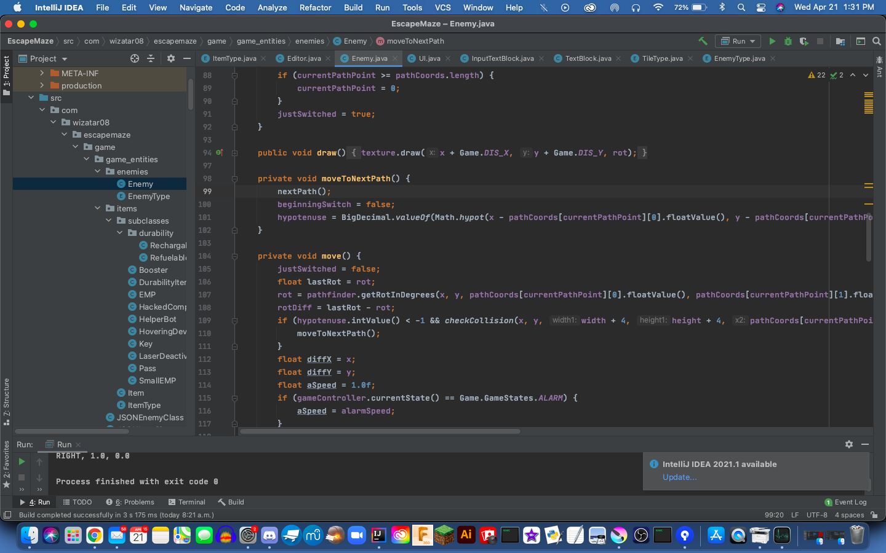
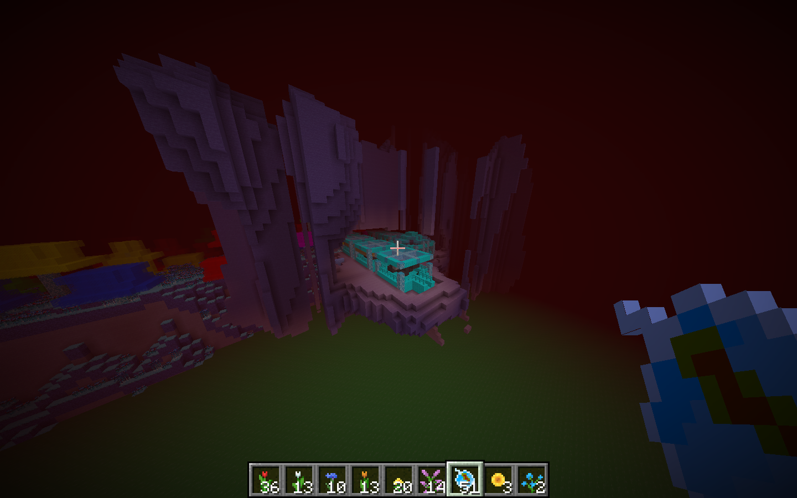
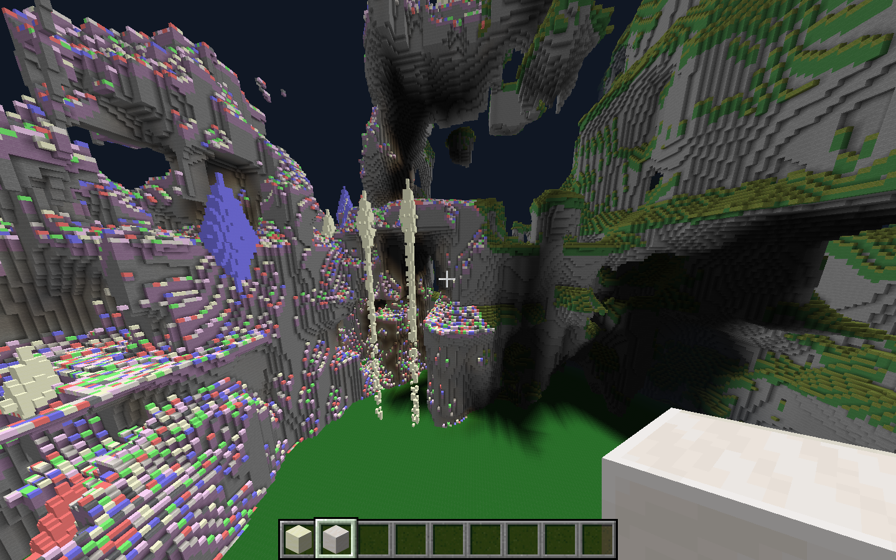

| About Me | Portfolio | Contact |
My name is Kiyoshi Jim, a fifteen year old that does to Robert Thirsk High School in Calgary, Alberta. I live in the community of Royal Oak.
My main interests mainly have to do with computer programming, math and music. I can program four different languages (though I am not good with all of them). The language that I program with these days and the one I am good at is Java, though I also know how to program using JS/HTML/CSS, Actionscript 3 and the Arduino programming language.

I also have experience modding Minecraft, though these days, I do it a lot less. Modding Minecraft means adding or changing elements of the original game. So far, I have no end goal of my mod, so I have been experimenting with the code and adding random features here and there.


Music is also a large part of my life. I play the piano on my own time and the percussion instruments in band. I have played piano for about ten years now and currently studying level 9 music under the Royal Conservatory of Music (RCM). This is my fourth year in band and my third year playing percussion instruments. In grade 7, I played the euphonium.